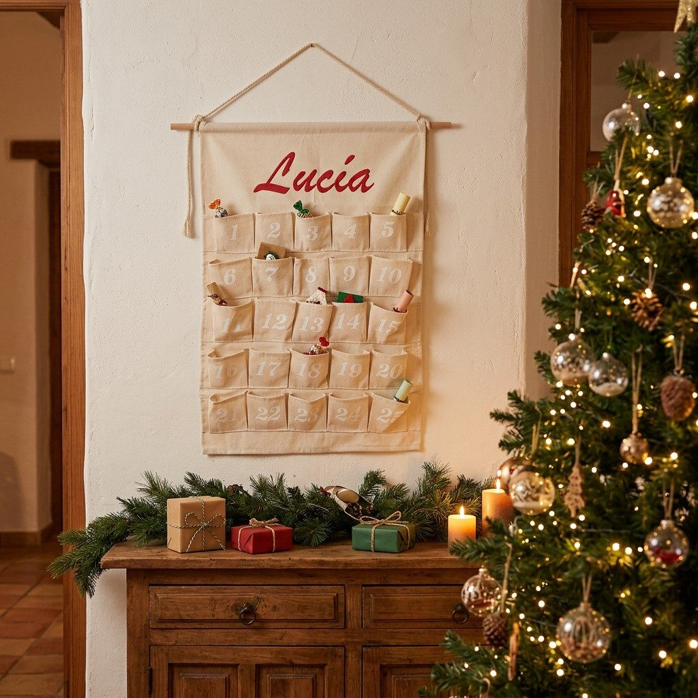

Calendario de Adviento personalizado con nombre: 3 formas de hacerlo especial este año

Un calendario de Adviento con el nombre de quien lo abre cada mañana deja de ser un calendario cualquiera: es su calendario. Y si además se rellena en casa, se guarda y vuelve a salir cada diciembre, acaba siendo una tradición de la familia. Aquí tienes tres formas de hacerlo, de la más especial a la más rápida.
1. De tela, con su nombre bordado
El que más ilusión hace. Un calendario de algodón color crudo con 25 bolsillos numerados y el nombre bordado arriba en letra cursiva: «Lucía», «Familia García», «Ana y Marc»… Se cuelga de su barra de madera en el salón o en la puerta de la habitación, y al acabar la Navidad se dobla y se guarda para el año siguiente.
Nuestro calendario de tela con nombre bordado cuesta 37,90 € con envío gratis. El nombre lo escribes al pagar (hasta 12 letras) y lo bordamos tal cual. De regalo te mandamos por correo 24 tarjetas de retos y 24 etiquetas con ese mismo nombre, para que esté listo para rellenar.
Ver el calendario con nombre bordado
2. De madera, para rellenar cada año
Si buscas algo que sea también decoración, la casita de madera con 24 cajones (44,90 €) tiene el tejado calado con renos y una luz cálida por dentro. Queda en una estantería de la cocina o del salón y cada cajón esconde una sorpresa. Al pagar puedes poner un nombre y te mandamos también los retos personalizados.
Para algo más sencillo y barato, el calendario de madera de cuenta atrás (16,90 €) marca los días que faltan con cubos y una figura de Papá Noel, un reno, un muñeco de nieve o un árbol.
3. Para imprimir en casa, en 5 minutos
Si no te da tiempo a pedir nada o ya tienes un calendario de bolsillos, el calendario de Adviento personalizado para imprimir (7,90 €) te llega por correo con el nombre ya puesto: portada, 24 tarjetas del 1 al 24 de diciembre y 24 etiquetas numeradas. Hay tres versiones:
- Niños: un reto mágico cada día («Escribe tu carta a los Reyes», «Hoy ayudas a decorar el árbol»…).
- Pareja: un detalle cada día para el otro.
- Familia: un plan para hacer juntos cada día.
Qué meter en cada bolsillo (sin gastar casi nada)
- Una chocolatina o una chuche pequeña, la más clásica.
- Un vale escrito a mano: «Vale por elegir la peli del viernes», «Vale por un desayuno en la cama».
- Un plan: ver las luces del centro, hacer galletas, una noche de juegos.
- Una pista de una búsqueda del tesoro que acaba el 24 con un regalo.
- Una pegatina, un adorno pequeño para el árbol o un lápiz de colores.
- Para adultos: una bolsita de té especial, una vela pequeña, una nota con un recuerdo bonito.
Tienes 10 ideas más para rellenar el calendario en este otro artículo.
¿Hasta cuándo se puede pedir?
El Adviento empieza el 1 de diciembre. Para que el calendario de tela o el de madera llegue a tiempo, pídelo antes del 15 de noviembre: tarda de 7 a 15 días. Si se te pasa la fecha, el imprimible llega al momento y lo puedes empezar el mismo día.
🎁 GRATIS EN TU CORREO
Kit de Navidad para imprimir: 10 páginas
Carta a los Reyes Magos y a Papá Noel, lámina para colorear, 16 etiquetas para los regalos y un bingo navideño para la sobremesa.